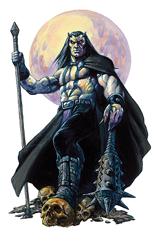

第二层领主：迪斯帕特
中型异界生物
生命骰数：34d8+442（595）
先攻权调整：+7
速度：30尺
防护等级：45（+3敏捷，+7盾牌，+25天生防护等级），接触13，措手不及42
攻击：+55/+50/+45/+40（近战，重型钉头锤+6）
伤害：1d8+20附带1秽恶伤害（重型钉头锤+6）
面宽/触及：5×5尺/5尺
特殊攻击：恐惧氛围，类法术能力，血肉化钢（Flesh to iron），锈蚀
特性：巴兹魔特性，伤害减免20/+7，异界生物特性，再生 8，法术抗力 38，召唤巴兹魔
豁免：强韧+32，反射+22，意志+26
属性：力量 39，敏捷 16，体质 37，智力 31，感知 24，魅力 31
技能：炼金+44，估价+44，唬骗+44，攀爬+48，集中+47，手艺（武器制作）+44，手艺（盔甲制作）+44，交涉+44，接触装置+44，威吓+50，知识（奥术）+44，知识（器械）+44，聆听+41，潜行+37，开锁+37，探知+44，搜索+44，法术辨识+44
特技：顺劈砍，黑暗圣言（Dark Speech），强力顺劈砍，精通先攻，强力攻击，类法术瞬发（Quicken Spell-Like Ability）×2，秽恶武术（重型钉头锤），武器专攻（重型钉头锤）
气候/地形：任意
组织：独行
挑战等级：26
宝物：四倍标准
阵营：守序邪恶
进化：无
铁塔，无懈可击的碉堡，阻止着那些痴心妄想的魔鬼，他就住在那里，钢铁公爵迪斯帕特，钢铁城市迪斯的主人。
迪斯帕特是小心谨慎的化身。他从来不贸然行动，也从来不离开他的铁塔（除非有阿斯摩蒂而斯的命令），在任何时候都准备起码九套备用方案和逃跑路线。在任何情况下，迪斯帕特都呈现出一幅镇定自若，风度翩翩的神态。他从不会表现出愤怒或是轻蔑，这使他显得很有魅力，也很危险。
迪斯帕特大约7英尺高，有着黑色的头发与一双小角。他的皮肤像钢铁一样寒冷坚硬。迪斯帕特总是穿着他帝王般的礼服，手中紧握着一把权杖，这即是他的徽记，也是把致命的武器，当然他也不会忘掉他那面魔法盾牌。
迪斯帕特的徽记是鲜红的底色上矗立着黑色的铁塔。
战斗：
迪斯帕特极度小心谨慎，所以在战斗中总是倾向于防守。他习惯于用“铁墙术”以及“死亡铁链墙”（Wall of deadly chains）把敌人逼得走投无路再去召唤帮手。
恐惧氛围（生物特性）：迪斯帕特可以自由制造出20尺的恐惧氛围。效果与“恐惧术”相同（施法者等级15，意志鉴定DC 37）。豁免成功的角色在24小时内不会被迪斯帕特的恐惧氛围影响。所有巴兹魔对这种氛围免疫。
血肉化钢（Flesh to Iron，生物特性）：当迪斯帕特用双手而不是钉头锤接触到目标，可以导致血肉变成钢铁。目标可以尝试进行强韧鉴定（DC 40）来抵抗这种效果。这种能力类似石化术，只不过目标会变成钢铁，而不是石头。
锈蚀（生物特性）：当迪斯帕特用双手而不是钉头锤接触到目标，可以导致金属瞬时锈蚀，碎裂。目标大小与锈蚀速度无关，一套全钢甲和一把长剑一样快地化为粉末。无魔法属性的目标（包括被迪斯帕特变成钢铁的生物）不能进行豁免鉴定，魔法物品则可以尝试进行反射鉴定（DC 40）来避免这种结果。对迪斯帕特造成伤害的金属武器同样会锈蚀，木制，石制，以及其他非金属材料的武器不受影响。
类法术能力：随意施展“操纵死尸”，“渎神之语”，“恶梦降临”（Call Nightmare）“媚惑怪物”，“唤起死灵”，“亵渎术”，“侦测善良”，“侦测魔法”，“高等接触魔法”，“生物定位术”，“物品定位术”，“反善良法阵”，“高等幻影”，“变形自己”，“烟火术”，“心脏骤停”（Stop Heart），“暗示”，“无错传送术”，“真知术”，“邪恶灵光”，“邪居”，“铁墙术”，“死亡铁链墙”，“哀伤之浪”（Wave of Grief），“崩坏术”（Wrack），一天一次“禁锢术”，“魔法徽记（任意）”，“许愿术”。施法者等级视为20，鉴定DC 20+法术等级。
巴兹魔特性：迪斯帕特可以用心灵感应于100尺内任何有语言的生物交谈。他可以在任何黑暗中视物，包括由“深幽黑暗术”制造的黑暗。迪斯帕特对火焰伤害和毒物免疫，对酸液和寒冷有20的伤害减免。
异界生物特性：迪斯帕特不能被更复或是复活。
再生（特殊）：+5附魔等级或以上的神圣武器可以对迪斯帕特造成正常伤害。
召唤巴兹魔（特殊能力）：迪斯帕特可以每日两次自动召唤5名奥塞魔，巴霸魔或是3名厄瑞尼斯女妖，恐纳魔，奇鲁魔。或是1名深狱炼魔。
个人财产：迪斯帕特的权杖是件次级神器，这把重型钉头锤+6也可以被视为统治权杖（Rod of Rulership），每日可施展3次“破善斩”（对善良角色增加20点伤害）。迪斯帕特也通常会携带这一面大钢盾+5。
迪斯帕特的目标：
即使以上级恶魔的标准，迪斯帕特也是位古老的人物。在他统治迪斯的岁月里，他学到了很多。他的行动小心而谨慎，作为一名炼狱领主，他基本上都在和墨菲斯托尔斯建立联盟。和他的盟友一样，迪斯帕特不喜欢拜尔泽布，他经常策划着对付这位第七层的领主。
迪斯帕特最主要的目标就是想看到他的敌人拜尔泽布的垮台。他所有的计划都围绕着这个中心。所以，相对的，拜尔泽布也常常和他对着干。以至于钢铁公爵常常需要花费大量时间来挫败拜尔泽布的阴谋。
迪斯帕特的信徒
很多生物都敬拜着迪斯帕特，尤其是地精，大地精以及其他好战的类人生物。他们崇拜他无懈可击，不可战胜的本质。
迪斯帕特的神庙通常也是座碉堡。它们一般易守难攻（而且还通常建隐秘地点），无数秘密通道使牧师们总保留着最后的方案。迪斯帕特的信徒都倾向于防守和隐蔽，他们从来不会被逼到无路可逃。
与迪斯帕特有联系的牧师通常穿着灰色衣服和钢铁面具，他们藏在重甲里挥舞着钉头锤。可供他们选择的领域有：魔鬼，邪恶和战争。
信徒：半精灵索罗夫（Thorolf）高大而强壮，很适合他高级迪斯帕特祭司的身份。他的神庙坐落在一座小村庄附近。紧邻着村子的陵园。这个死气沉沉的地方被迪斯帕特的信徒牢牢控制在手里，也不可能有什么人反对。亡灵法师以及其他什么会想要操纵死尸的家伙都把这个地方使为禁地。
没人知道索罗夫事实上有恋尸癖，他时常离开他那作威作福的位子来到墓地里寻欢作乐。甚至其他迪斯帕特的信徒也不知道这件事情，索罗夫会把所有可能发现他秘密的人先行扼杀。
索罗夫
男性半精灵，6级牧师/6级战士
挑战等级 12
中型类人生物
生命骰数 6d8+6d10（74）
先攻权加值 +5
速度 30尺
防护等级 20，接触11，措手不及19
攻击：+15/+10（近战，1d8+6/19-20，重型钉头锤+2）
特殊攻击：呵斥死灵×5每日
特性：半精灵特性
阵营：守序邪恶
豁免：强韧+10，反射+5，意志+9
属性：力量 15，敏捷 12，体质 11，智力 11，感知 15，魅力 15
技能：手艺（金属）+9，跳跃+6，聆听+3，探知+6，搜索+4，观察+3，野外生存+3
特技：盲斗，战斗反射，黑暗信徒（Disciple of Darkness），精通重击（重型钉头锤），精通先攻，强力攻击，抄写卷轴，法术亵渎（Violate Spell），武器专攻（重型钉头锤），武器专精（重型钉头锤）
半精灵特性：索罗夫对魔法睡眠免疫。再微光下视力范围是人类的两倍。索罗夫同时在聆听，搜索和观察上获得+1的种族调整（已记如上表）。
通常法术：（/5/5/5/3；豁免DC 12+法术等级）：0级，“造水术”，“侦测魔法”，“光亮术”，“阅读魔法”，“提升抗力”。1级，“祝福术”，“治疗轻伤”，“魔鬼之尾”（Devil’ Tale*），“神恩术”，“心脏疼痛”(Heartache)。2级，“公牛之力”，“人类定身术”，“沉默术”，“音鸣爆”，“神赐武器”（Spiritual Weapon*），3级，“魔化防具”*，“祈祷术”，“灼热光辉”
*领域法术。
领域：魔鬼（唬骗，交涉，威吓，观言察色时骰数+6，每日一次），战争（武器专攻[重型钉头锤]）
个人财产：重型钉头锤+2，轻型防御大盾+2，精灵锁甲，蜘蛛之腿（Spider legs）卷轴，胶质墙（Wall of ooze）卷轴，猫之优雅药水。
迪斯帕特的手下
在铁塔里，迪斯帕特的防护等级，魔法抗力以及豁免都获得+20的奖励，使他变得几乎不可战胜。所以他也很少离开这里，而是通过他手下－主要是厄瑞尼斯女妖来执行计划或是传达命令。女妖军团的首领是尤丝蒂芮伽（Ustyhrin-ja）。她非常忠于迪斯帕特，最近甚至亲手杀掉了3名拜尔泽布的卧底女妖。这个事件让她更加狂热地效忠迪斯帕特，除了她的主人以外，她谁都不信任。
铁塔里也有新进的守卫，塔罗斯（Talos）。和人们传言的不同，塔罗斯并非由迪斯帕特所制造。这传奇的魔像非常古老，而为什么它会为迪斯帕特服务则至今是个迷。
尤丝蒂芮伽
女性厄瑞尼斯女妖，1级战士/10级迪斯帕特的信徒
挑战等级 18
中型异界生物
生命骰数6d8+6+1d10+1+10d10+10（119）
先攻权加值 +1
速度 30尺，飞行50尺（灵活性一般）
防护等级 25，接触12，措手不及24
攻击：+27/+22/+17/+12（近战，1d8+9+1d6电系伤害/15-20，雷鸣脉冲剑+4[shocking burst longsword]）或者+18（远程，羁绊，绳索）
特殊攻击：媚惑人类，羁绊绳索，锈蚀爪，类法术能力
特性：巴兹魔特性，装置知识（Device Lore），伤害减免10/+1，强力斩铁闪（Greater Iron Hews），钢筋铁骨，斩铁闪，钢铁力量+2，钢铁皮肤，异界生物特性，法术抗力 12，召唤巴兹魔，召唤厄瑞尼斯女妖，巧言
阵营：守序邪恶
豁免：强韧+15，反射+13，意志+14
属性：力量 16，敏捷 13，体质 13，智力 15，感知 14，魅力 20
技能：集中+12，易容+21，逃脱+17，躲藏+19，威吓+7，聆听+20，潜行+14，搜索+13，观察+15
特技：顺劈砍，黑暗信徒，寓守于攻，强力攻击，武器专攻（长剑），自我摧残（Willing Deformity）
媚惑人类（生物特性）：尤丝蒂芮伽可以靠目光媚惑类人生物，这种能力并非凝视攻击，目标根本不需要看到她的眼睛。这种能力范围60尺；被影响的生物必须通过意志鉴定（DC 18）否则将成为绝对终于女妖的仆人，他将会不惜一切代价保护尤丝蒂芮伽，包括杀掉自己的同伴或是自己面对死亡。这种能力类似与媚惑人类这个法术（施法者等级8）。
羁绊绳索（特殊）：尤丝蒂芮伽随身携带着50尺长的绳索用来羁绊对手，如同施展“活化绳索”（施法者等级16）。尤丝蒂芮伽在30尺内使用绳索不受距离减值。
锈蚀爪（特殊能力）：每日一次，尤丝蒂芮伽可以施展如同法术“锈蚀爪”一样的能力（施法者等级15）。
类法术能力：随意施展“操纵死尸”，“媚惑怪物”，“亵渎术”，“隐身术（自身）”，“反善良法阵”，“高等幻影”，“变形自己”，“燃火术”，“识破隐形”，“暗示”，“邪影击”，施法者等级8，豁免DC 15+法术等级。尤丝蒂芮伽也可以随意使用“无错传送术”（自身及50磅物品），施法者等级12。
巴兹魔特性：尤丝蒂芮伽可以用心灵感应于100尺内任何有语言的生物交谈。她可以在任何黑暗中视物，包括由“深幽黑暗术”制造的黑暗。尤丝蒂芮伽对火焰和毒物伤害免疫，对酸液和寒冷有20的伤害减免。
异界生物特性：尤丝蒂芮伽不能被更复或是复活。
装置知识（特殊）：尤丝蒂芮伽如同游荡者一样可以识破金属制作的陷阱。她在接触金属陷阱时获得+2专业加值。
强力斩铁闪（特殊）：每日一次，尤丝蒂芮伽可以在同一轮的所有伤害骰上获得+6的神赐加值。这种能力不能同斩铁闪叠加，这两种技能必须分开。
钢筋铁骨（特殊能力）：每日一次，尤丝蒂芮伽在自己身上施展如同法术“钢筋铁骨”一样的能力（施法者等级18）。
斩铁闪（特殊）：每日一次，尤丝蒂芮伽可以在同一轮的所有伤害骰上获得+3的神赐加值。
钢铁力量（生物特性）：当使用钢铁武器时，尤丝蒂芮伽在攻击骰和伤害骰上获得+2的洞察加值。当她使用锋锐武器（Keen Weapon）时，重击威胁范围改变为3倍，而不是通常的2倍。这些调整已经体现在上文的数据中。
钢铁皮肤（特殊能力）：每日一次，尤丝蒂芮伽可以在自己身上施展如同法术“石皮术”一样的能力（施法者等级15）。
召唤巴兹魔（特殊能力）：尤丝蒂芮伽可以每日一次召唤2d10名劣魔（成功率50%）或1d4名巴霸魔（成功率35%）
召唤厄瑞尼斯女妖（特殊能力）：尤丝蒂芮伽可以每日一次自动召唤1d4名厄瑞尼斯女妖。这种能力的效果如同“召唤怪物术”。
巧言（生物特性）：尤丝蒂芮伽永久处在巧言术的效果下。
个人财产：雷鸣脉冲剑+4，钢铁大盾+2，防护戒指+1，风暴法珠（Orb of Storm），绳索
塔罗斯
挑战等级 22
超大型构造体
生命骰数54d10(297)
先攻权加值 -2
速度 20尺
防护等级 35，接触6，措手不及35
攻击：+53（近战，4d6+15，抨击×2）
面宽/触及：10×10尺/15尺
特殊攻击：喷吐攻击
特性：构造体特性，伤害减免50/+3，魔法免疫，易锈（Rust Vulnerability）
阵营：绝对中立
豁免：强韧+18，反射+16，意志+18
属性：力量 41，敏捷 7，体质 无，智力 无，感知 11，魅力 1
喷吐攻击（生物特性）：塔罗斯可以自由喷吐出一片毒云（强韧DC 37；初始2d4体质伤害，附加效果直接死亡），覆盖它面前1000立方英尺的正方体空间，持续时间1轮。塔罗斯不能在使用过喷吐攻击后的1d4轮中再次使用喷吐攻击。
构造体特性：塔罗斯对精神类魔法，毒物，睡眠，麻痹，眩晕，疾病，死亡，死灵系法术效果以及任何需要进行坚韧坚定的效果（除非此效果可以作用在物体上）免疫。它同样对重击，偷袭，属性伤害，属性吸收，能量吸收以及巨创死亡免疫。它不能接受治疗，但可以通过修理恢复生命。它拥有60尺黑暗视觉。
魔法免疫（特殊）：除了下述效果，塔罗斯对一切法术，类法术能力，超自然能力免疫。电系效果可以使他缓慢3轮，如同魔法“缓慢术”，火系法术可以抵消缓慢效果，并为塔罗斯治疗（每3点伤害值治疗1点生命），塔罗斯不能尝试豁免。
易锈：塔罗斯可以被锈蚀攻击伤害，比如迪斯帕特的攻击或是锈蚀爪。